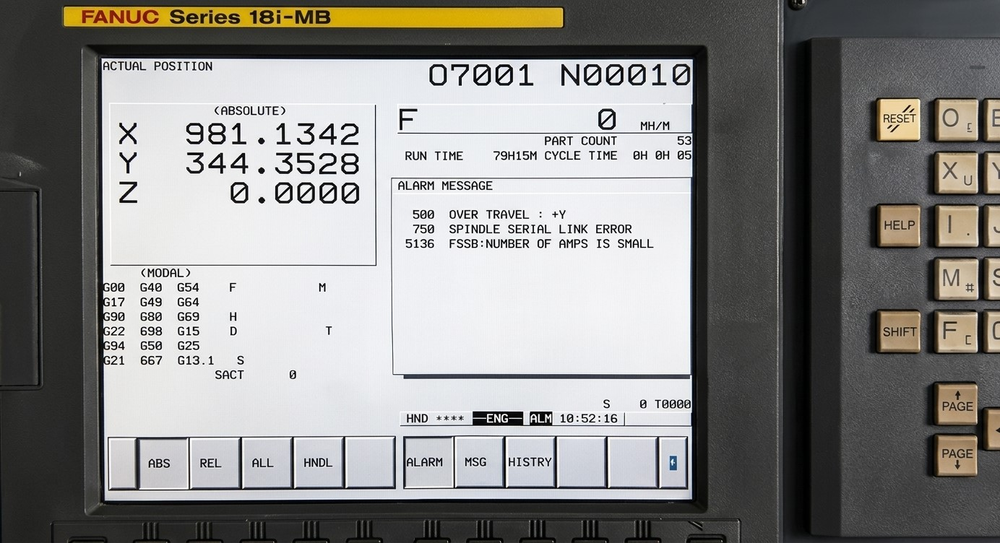

La alarma Fanuc 750: SERVO OVERCURRENT / AMPLIFIER OVERLOAD

La alarma Fanuc 750 aparece cuando el sistema detecta un consumo excesivo de corriente en el servo o en el amplificador, lo que indica una condición fuera de los límites seguros de funcionamiento.
Estado de la máquina: Parada inmediata.
Causa: Sobrecorriente en servo o amplificador.
Solución rápida: Revisar carga mecánica y sistema eléctrico.
Nivel de urgencia: Muy alta.

Los picos de corriente o bloqueos mecánicos pueden provocar la alarma Fanuc 750, indicando un esfuerzo excesivo en el sistema de accionamiento.
La alarma Fanuc 750 indica que el sistema está trabajando por encima de sus límites eléctricos. Ignorar este error puede provocar daños irreversibles en el servo o en el amplificador.
"Forzar el funcionamiento bajo condiciones de sobrecorriente puede quemar el amplificador o dañar el motor de forma irreversible."
Consecuencia: Desde degradación progresiva hasta la rotura completa del servo o del módulo de potencia.
Se recomienda detener la máquina inmediatamente y realizar un diagnóstico completo antes de continuar la producción.
¿Necesita Asistencia Técnica?
En CNC Systems contamos con experiencia en diagnóstico de fallos eléctricos y mecánicos en sistemas FANUC.
📞 No dude en ponerse en contacto con nosotros.